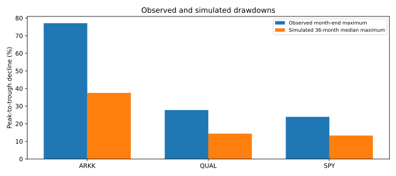

Historical ETF results
50,000 joint bootstrap paths, calibrated to your uploaded adjusted-price history. These are conditional simulations, not forecasts.
Input: 2,980 price rows, 2015-01-02–2026-11-06. Model sample: 141 complete monthly returns, 2015-02–2026-10. Partial months are excluded.
What the ETFs represent
ARKK
ARK Innovation ETFActively managed companies focused on disruptive innovation. Represents the innovation-focused strategy.
Fund providerQUAL
iShares MSCI USA Quality Factor ETFU.S. stocks selected for high return on equity, stable earnings, and low debt. Quality does not mean risk-free.
Fund providerSPY
SPDR S&P 500 ETF TrustTracks the S&P 500: roughly 500 large U.S. companies. Serves as the comparison benchmark.
Fund providerThese funds are not selected using Shariah screens. This comparison is not a Shariah-compliant portfolio; SPY is a benchmark.
Observed historical risk
Calculated from month-end adjusted prices. Daily or intramonth losses can be larger.
| ETF | Historical CAGR | Annualized volatility | Maximum drawdown |
|---|---|---|---|
| ARKK | 13.5% | 36.4% | -77.1% |
| QUAL | 13.3% | 15.1% | -27.8% |
| SPY | 13.9% | 14.9% | -23.9% |
Observed versus simulated drawdowns

Simulated outcomes
Each ETF is a separate investment arm starting with $500, receiving $100/week represented as $433.33 at month-end. Loss means ending below total deposits. P(beat SPY) compares the same resampled market periods.
| Months | ETF | Deposited | Median value | 5th–95th percentile | P(loss) | P(beat SPY) |
|---|---|---|---|---|---|---|
| 1 | ARKK | $933 | $937 | $865–$1,026 | 45.1% | 49.1% |
| 1 | QUAL | $933 | $939 | $895–$974 | 34.0% | 50.0% |
| 1 | SPY | $933 | $941 | $899–$973 | 30.4% | — |
| 3 | ARKK | $1,800 | $1,868 | $1,562–$2,212 | 38.1% | 53.9% |
| 3 | QUAL | $1,800 | $1,839 | $1,723–$1,930 | 24.2% | 48.0% |
| 3 | SPY | $1,800 | $1,843 | $1,719–$1,927 | 23.5% | — |
| 6 | ARKK | $3,100 | $3,258 | $2,515–$4,093 | 37.0% | 54.9% |
| 6 | QUAL | $3,100 | $3,228 | $2,925–$3,448 | 23.9% | 45.3% |
| 6 | SPY | $3,100 | $3,232 | $2,934–$3,452 | 22.6% | — |
| 12 | ARKK | $5,700 | $6,189 | $4,322–$8,700 | 34.1% | 54.0% |
| 12 | QUAL | $5,700 | $6,125 | $5,331–$6,793 | 17.8% | 43.6% |
| 12 | SPY | $5,700 | $6,144 | $5,355–$6,813 | 16.3% | — |
| 24 | ARKK | $10,900 | $12,753 | $7,766–$21,049 | 29.8% | 53.6% |
| 24 | QUAL | $10,900 | $12,480 | $10,307–$14,650 | 11.5% | 40.8% |
| 24 | SPY | $10,900 | $12,567 | $10,419–$14,721 | 10.2% | — |
| 36 | ARKK | $16,100 | $20,335 | $11,072–$38,201 | 26.8% | 53.9% |
| 36 | QUAL | $16,100 | $19,688 | $15,558–$24,180 | 7.7% | 37.9% |
| 36 | SPY | $16,100 | $19,906 | $15,765–$24,368 | 6.6% | — |
How to interpret this
The model samples consecutive 3-month blocks across all three ETFs together, preserving observed co-movement. The 1- and 6-month block comparisons and hypothetical shock results are available in the aggregate downloads. No trading strategy or out-of-sample performance claim is established by this simulation.
- ETF proxies are not survivorship-free point-in-time stock cohorts.
- The sample begins in 2015 and is highly regime-dependent.
- Moving-block bootstrap resamples observed history and does not forecast.
- Correlation and volatility can change abruptly outside the sample.
- Month-end data miss intramonth drawdowns and liquidity gaps.
- Adjusted-price histories may be revised by the data vendor.
- Fund operating expenses are embedded in ETF history; no additional fee is deducted. Taxes, trading costs, inflation, and exact weekly timing are omitted.
- A fixed zero-percent risk-free rate is used only for transparent Sharpe comparison.
Download calculated results
Simulation CSV · Risk metrics · Correlations · Block sensitivity · Input provenance and parameters